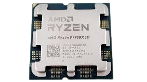

A processor (CPU) is the logic circuitry that responds to and processes the basic instructions that drive a computer.
Procesor (CPU) to obwód logiczny, który reaguje i przetwarza podstawowe instrukcje sterujące komputerem.

| Nazwa |
Clock rate |
Pobór mocy |
Rdzenie |
Cena |
Sklep |
| Procesor AMD Ryzen 7950 X3D |
4.2 GHz |
120W |
16 rdzeni |
2199 PLN |
AMD |
| Konkuręcja |
| Intel Core i9-9900KF |
3.6 GHz |
120W |
12 rdzeni |
1999 PLN |
Intel |
| Intel Core i9-9900K |
3.6 GHz |
120W |
12 rdzeni |
1999 PLN |
Intel |
Interesting Facts About Processors
- The first microprocessor was the Intel 4004, released in 1971.
- Modern processors can have billions of transistors on a single chip.
- CPU clock speeds are measured in Hertz (Hz), with modern CPUs reaching several GHz.
- Many processors use multiple cores to perform parallel processing.
- Some CPUs have built-in graphics processing capabilities.
- Processors use cache memory to speed up data access.
- The heat generated by a CPU can be enough to fry an egg!
Ciekawostki o Procesorach
- Pierwszy mikroprocesor to Intel 4004, wydany w 1971 roku.
- Nowoczesne procesory mogą mieć miliardy tranzystorów na jednym chipie.
- Prędkości zegara CPU mierzone są w Hertzach (Hz), przy czym nowoczesne CPU osiągają kilka GHz.
- Wiele procesorów wykorzystuje wiele rdzeni do przetwarzania równoległego.
- Niektóre CPU mają wbudowane możliwości przetwarzania grafiki.
- Procesory używają pamięci podręcznej do przyspieszenia dostępu do danych.
- Ciepło generowane przez CPU może być wystarczające do usmażenia jajka!
More info: Strona cambridge
Wróć